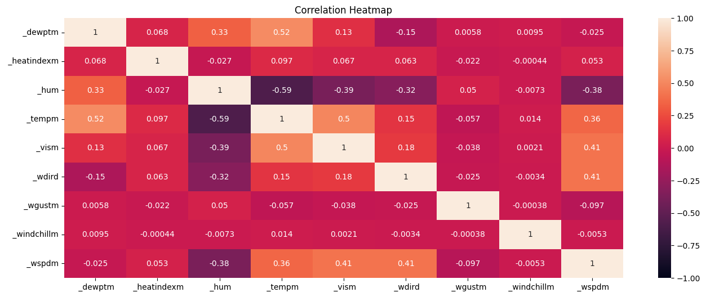
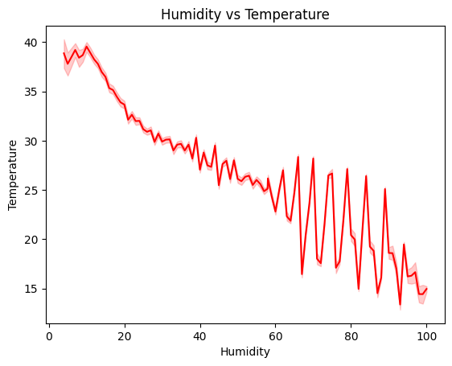
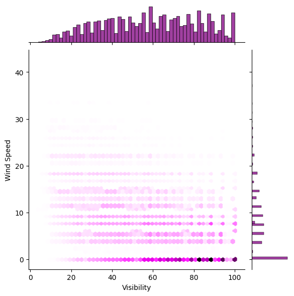
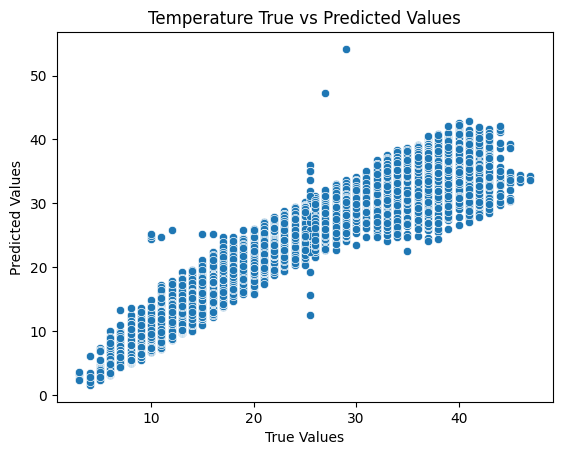
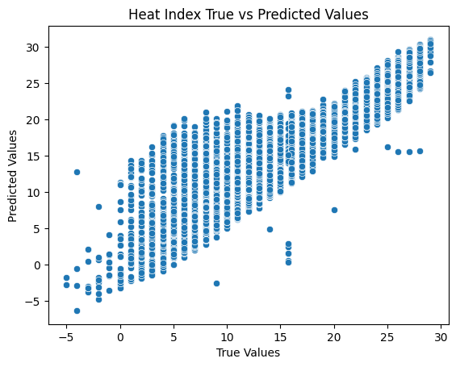
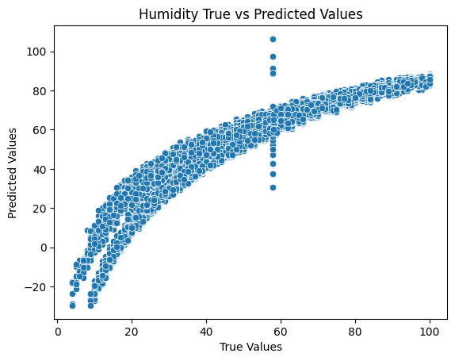

Weather Regression
Zane Hutchens - March 24, 2024Problem
With weather playing such a major role in every day life, it's more important than ever for meteorologists to be able to accurately predict temperature, snow, thunderstorms, natural disasters, and more. Additionally, its essential to consider the humanitarian aspect as well. Being able to predict strength, timing, and growth rate of tornadoes, storms, blizzards, and other types of dangers will be can provide the time needed to get prepared and evacuate if necessary.
Dataset
The dataset I chose contains weather records from December, 1997 to December, 2016 located in Delhi, India. With over 100,000 records and 20 features, there is a lot of data available to go through and use for modeling and visualization. I'm most interested in the temperature, wind speed, visibility, humidity, and dew point. The original dataset can be found here on Kaggle.
Preprocessing
The dataset was not very good out of the box, and quite a bit of preprocessing techniques were needed to get it ready for modeling and visualization. The first thing I did was drop all of the columns I did not need, which included condition, rain, snow, fog, and more. Afterwards, all null values were filled using a SimpleImputer and the mean strategy. Finally, I checked for statistical outliers in the dataset and eliminated so the features were well rounded.
Visualizations
The first visualization I created is a correlation heat map of all of the features. I wanted to check relationships between features that I could possibly use for modeling. As seen in the graph, the features temperature has high correlations with humidity and dew point, whilst visibility has a high correlation with wind speed.
Seeing as how humidity and temperature have a high correlation, I created a line plot to visualize the relationship more closely. From the graph, its easy to see that as humidity increases, the temperature decreases.
Lastly, I have a hex plot for visibility and wind speed. It seems that wind speed is quite variable, but the visibility tends to trend towards 0. Additionally, thats also where most of points are located, since they tend to be darker than the other bins.
Experiment 1: Linear Regression
The first experiment I ran was using a linear regression model to predict temperature values. I was originally having a lot of trouble getting the linear regression to work decently, but removing the outliers improved the models performance drastically. However, there are still some unexpected predictions being made, such as the predicted value that is higher than 50. To evaluate the model, I used root mean squared error, mean squared error, mean absolute error, R2 Score, explained variance, and finally, cross validation.
Experiment 2: Ridge
The second experiment I switched the model to Ridge regression and switched the target feature to dew point. Similar to the first experiment, the model did not perform well until all of the outliers were removed from the dataset. The model performed relatively similarly to the linear regression model, but was a little more consistent and did not contain as many outliers in the predictions. For evaluation, I used the same as I did for the linear regression model.
Experiment 3: Elastic Net
For the final experiment, I switched to an Elastic Net model and target feature humidity. It performed better than Ridge and Linear, but had some odd behavior with humidities around 60 g/kg. For some reason, it predicted quite a wide range of numbers, including greater than 100 g/kg and as low as 30 g/kg. Other than this, the rest of predictions were relatively consistent. For evaluation, I used the metrics as the previous experiments.
Impact
When predicting meteorological values or events, it is crucial to make sure predictions are as accurate as they can be. Weather plays a major role in every day life, and is a factor in lots of tiny decisions throughout a persons day. For models that are predicting strength and timing of more dangerous events such as hurricanes or tornadoes, it's even more vital to be accurate. Even being off by a few hours could mean that a lot of the population is not able to take appropiate action and would not be prepared.
Conclusion
Overall, I had a really enjoyable time working with this dataset. It's the first project I had where I've had to continuously go back to the preprocessing stage to try and shift values and figure out why the model was underperforming. Additionally, I'm glad I got the hands on practice with regression models and their evaluation techniques, as it did not come as intuitively as classification models and their evaluation did.
References
MahirKukreja, (n.d.) Delhi Weather Data. Kaggle. https://www.kaggle.com/datasets/mahirkukreja/delhi-weather-data
Code
The models, visualizations, and code for my project can be found in the Github repository.